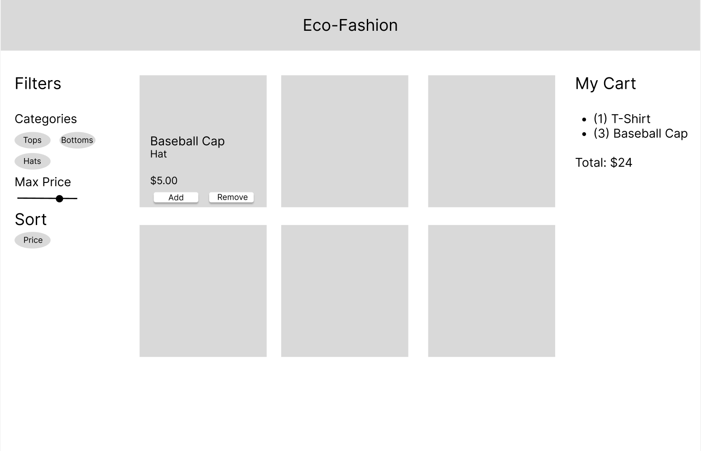
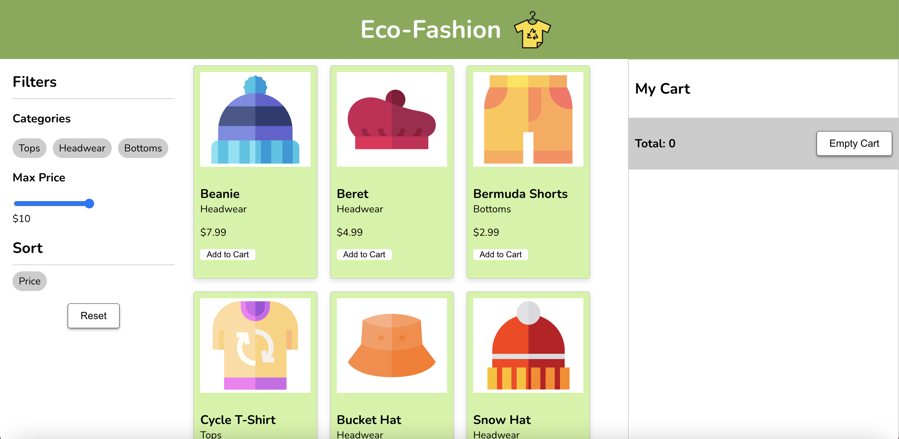

This development project sought out to utilize my React skills to create a simple User Interface that emulates many online popular retail sites today. I started by conducting research across various existing retail UIs and drawing inspiration from my findings to create an optimized design for a second-hand clothes retail platform. This prototype contains a list with filtering and sorting features along with a shopping cart aggregator.
I was inspired by recent movements for sustainable online retail, such as Trashie, and chose to focus my research on online clothing retail platforms.
To get a basis of how other organizations are designing their interfaces, I performed a competitive analysis comparing differing list and aggregator features from some of the top fast-fashion retailers. The following sites were selected for the study:
I observed the different features offered by each site and created a competitive comparison chart to visualize the differences between each retailer. The chart can be found below.
| Shein | Temu | Wish | |
|---|---|---|---|
| Categorical Sorting (Article of Clothing) | X | X | |
| Cart Pop-Up | X | X | |
| Cart Quick-Add | X | X | |
| Price Filtering | X | ||
| 1-Click-Buy | X |
The three websites selected all served similar purposes for users; providing an e-commerce platform for fast fashion purchases. Nonetheless, they all offered different favoriting, sorting, and aggregator features.
All of the sites had some kind of filtering option; however, Shein and Wish were the only ones that offered filtering by clothing article type (ex: tops). Considering these sites are often used in search of affordable clothing alternatives, I was surprised to see only Shein had a price filtering feature. In terms of aggregator features, Shein was the only website that offered “1 Click Buy” features, but it was only for certain products. This feature seemed a bit unnecessary since most users purchase more than one item at a time, it did not fully align with the user's mental process.
Unlike the other two sides, Wish did not offer a Quick add feature for the cart nor did it include a cart pop up, in order to add an item to the cart a user must click on the item link and add it in a new window. This felt like very weak decision to me as it seemed to disrupt the heirarchy of the site forcing users to switch between the cart and item list pages as they shop. All three carts did, however, include a quantity increment feature for each item to change the number of each item being purchased/remove them from the cart. Overall, I felt Shein’s design provided features that complemented the users' intentions on the site, such as the price filter and cart quick add; however, some features felt seamingly felt unnecessary.
In the spirit of pushing for more sustainable online retail practices, I chose to focus on creating a second-hand clothing shopping experience for users called "Eco-Fashion". The site is meant to offer users with retail services for second-hand clothing items. Below I listed some of the major features I chose to incorporate, many of which were inspired by my competitive research analysis.
Before starting development I decided to create a lofi wireframe on figma to get a better sense of the structure I wanted for my webpage. I chose to place the clothing items in the center to draw the users' attention to them. Each clothing item card contains its name, its article/categorical type, price, and a cart quick-add button. Just to the side on the left, users have access to the sorting and filter tools so they can keep track of these settings as they shop. Finally, I placed the shopping cart pop-up on the right as it is likely the final section of the page users will navigate to.
Having collected the necessary data and created a rough design of my site, I began the development process. The site was built in ReactJS using CSS for styling and deployed on Vercel.
In the theme of sustainability, I opted for greens and natural oranges for the color scheme, making sure to create enough contrast to ensure accessibility. Using adequate font sizes and consistent font styles throughout the webpage, I maintained an organized and navigable hierarchy.
I incorporated all of the features mentioned before into the final design. The categorical filtering and price sorting tools are bubbles that turn orange when selected to keep track of filter selections, emulating a check-list of sorts. The price filtering tool is a slider for optimal precision and intuitiveness for users.
I noticed that although some of the websites I researched had quick-add buttons for clothing items, none of them had quick-remove buttons. As users shop it is common for them to find alternative items or lose interest in items that already are included in their carts. So, for items already added to the cart, I decided to add a "Remove" button, so users can choose to remove them from their cart as needed. I also added an "Empty Cart" button that removes all items from the cart. Similarly, I added a "Reset" button to reset all of the filtering/sorting settings without disrupting the users' cart.
Overall, the webpage contains all of the minimal requirements for basic prototype functionality; however, there were a couple of features I felt could have been enhanced or added. I think it would have made more sense instead of having a maximum price slider to incorporate a price range slider that handled minimum and maximimum price values. Additionally, for the remove/add from cart feature, I think it would have been more realistic to add a quantity attribute to the cart where users could input the quantity of each item they wanted to purchase. With more time, these features could have been implemented and enhanced the prototype's quality.